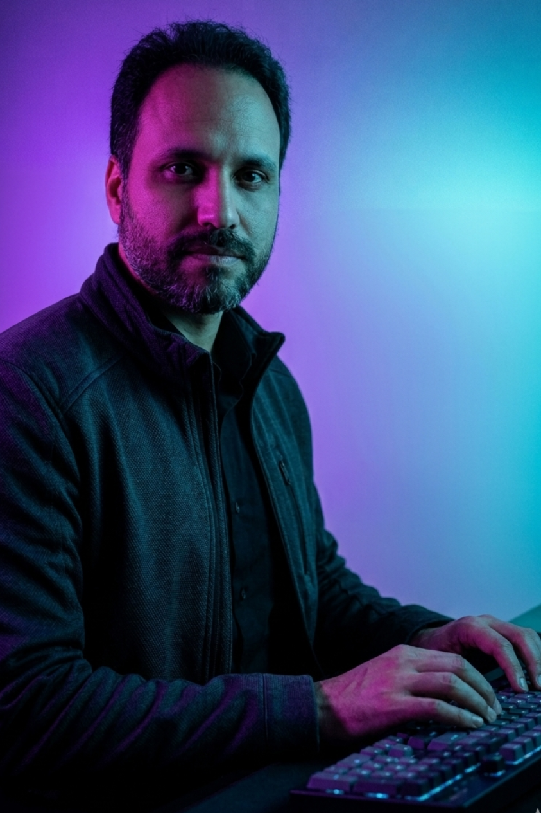

Sobre mim
Sou desenvolvedor focado em backend com C# e .NET, em transição para a área de tecnologia após experiência profissional em outros setores.
Tenho desenvolvido projetos práticos com foco em APIs REST, organização de código e boas práticas, buscando construir sistemas escaláveis e bem estruturados.
Atualmente, estou em formação em Análise e Desenvolvimento de Sistemas e continuo evoluindo minhas habilidades para atuar como desenvolvedor backend em ambientes profissionais.

Projetos
Contato
Entre em contato comigo.